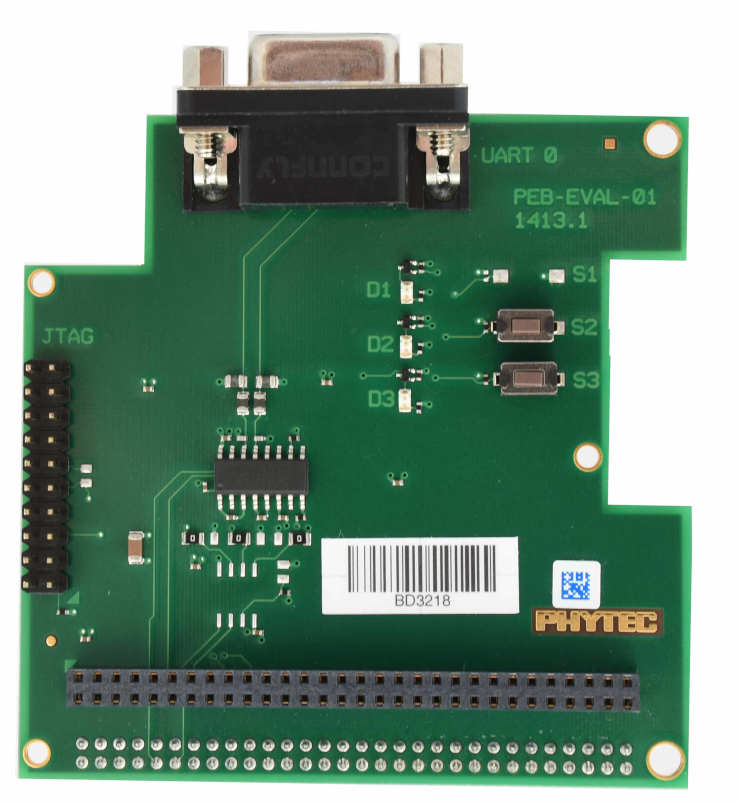

phyBOARD-Pollux i.MX8M Plus
phyBOARD-Pollux i.MX8M Plus
概述
phyBOARD-Pollux 基于 phyCORE-i.MX8M Plus SoM，而该 SoM 基于 NXP i.MX8M Plus SoC。该 SoC 包含四个 Cortex-A53 内核和一个 Cortex-M7 内核，后者用于运行 Zephyr 等实时应用。phyBOARD-Pollux 可用于智能家居、工业 4.0、物联网等多种应用。它具有丰富的接口和强大的计算能力，既可作为参考或用于开发，也可用于最终产品。
开发板特性：
存储器：
RAM: 256MB - 8GB LPDDR4
EEPROM: 4kB - 32kB
eMMC: 4GB - 64GB (eMMC 5.1)
SPI NOR Flash 存储器：4MB - 256MB
接口：
以太网：2 个 10/100/1000BASE-T（1 个支持 TSN）
USB：2 个 3.0 主机
串口：1 个 RS232 / RS485 全双工 / 半双工
CAN: 2x CAN FD
数字 I/O：通过扩展连接器
PCIe: 1x miniPCIe
MMX/SD/SDIO：microSD 卡槽
显示：LVDS（1x4 或 1x8）、MIPI DSI（1x4）、HDMI
音频：SAI
摄像头：2 个 MIPI CSI-2（phyCAM-M）
扩展总线：I2C、SPI、SDIO、UART、USB
JTAG：通过 PEB-EVAL-01
LEDs:
1 个通过 I2C 控制的多色状态 LED

有关该开发板的更多信息，参见 PHYTEC website。
支持的功能
phyboard_pollux 开发板支持下列硬件功能。
说明
The list of supported hardware features was not generated. Run a full documentation build for the required metadata to be available.
建议在运行 Linux 的主机端禁用 M7 内核所用的外设。
连接与 IO
以下组件已经过测试，工作正常。
UART
开发板名称 |
SoM 名称 |
用法 |
|---|---|---|
调试 USB（A53） |
UART1 |
通过 USB 的 UART 调试控制台 |
连接到 WiFi 模块 |
UART3 |
连接 WiFi/BLE 模组的 UART |
调试 USB（M7） |
UART4 |
通过 USB 的 UART 调试控制台 |
备注
连接到 UART3 的 WiFi/BLE 模块目前还无法在 Zephyr 中使用。UART3 也可以通过连接器 X6 的引脚 31（RX）和 33（TX）使用。
GPIO
GPIO 的引脚复用采用 NXP 创建的 mimx8mp 设备树中的标准引脚复用配置，位于 dts/arm/nxp/imx/nxp_imx8ml_m7.dtsi。phyBOARD-Polis 的引脚定义见 PHYTEC website。
I2C
板上已有多个 I2C 设备连接到 I2C 总线。如果 A53 内核上运行 PHYTEC BSP，M7 内核不应使用其中部分设备。
以下是板载 I2C 设备概览：
I2C 设备 |
地址 |
用法 |
M7 可否使用？ |
|---|---|---|---|
PMIC |
0x25 on i2c1 |
电源管理 |
不应使用 |
EEPROM（Atmel 24C32） |
0x51 on i2c1 |
EEPROM（U-Boot 配置） |
不应使用 |
RTC (RV3028) |
0x51 on i2c1 |
实时时钟 |
不应使用 |
EEPROM（Atmel 24C02） |
0x51 on i2c2 |
EEPROM（位于载板上） |
是 |
PCA9553 |
0x62 on i2c2 |
RGB LED |
是 |
备注
A53 内核使用 i2c1 与 PMIC 通信。由于 PMIC 是系统的关键部件，为避免冲突，i2c1 应只由 A53 内核使用。
编程与调试
i.MX8MP 没有供 M7 内核使用的独立 Flash。因此，A53 内核必须将 M7 内核的程序加载到正确的内存地址，设置 PC 并启动处理器。
M7 最多可以使用 3 种不同的 RAM（目前只支持两种配置：ITCM 和 DDR）。A53 和 M7 的存储器映射如下：
区域 |
Cortex-A53 |
Cortex-M7（系统总线） |
Cortex-M7（代码总线） |
大小 |
|---|---|---|---|---|
OCRAM |
0x00900000-0x0098FFFF |
0x20200000-0x2028FFFF |
0x00900000-0x0098FFFF |
576KB |
DTCM |
0x00800000-0x0081FFFF |
0x20000000-0x2001FFFF |
128KB |
|
ITCM |
0x007E0000-0x007FFFFF |
0x00000000-0x0001FFFF |
128KB |
|
OCRAM_S |
0x00180000-0x00188FFF |
0x20180000-0x20188FFF |
0x00180000-0x00188FFF |
36KB |
DDR |
0x80000000-0x803FFFFF |
0x80200000-0x803FFFFF |
0x80000000-0x801FFFFF |
2MB |
有关内存映射的更多信息，请参阅 i.MX 8M Plus Applications Processor Reference Manual（第 2.1 至 2.3 节）
编译时需要选择使用哪个内存区域。该配置在设备树和 defconfig/程序的配置中完成。
Zephyr 默认使用 TCM 内存区域。 可以将其配置为使用 DDR 区域。在设备树覆盖中可以选择这两种方案。
chosen {
/* TCM */
zephyr,flash = &itcm;
zephyr,sram = &dtcm;
};
chosen {
/* DDR */
zephyr,flash = &ddr_code;
zephyr,sram = &ddr_sys;
};
在 prj.conf 中配置使用 DDR 内存区域：
CONFIG_CODE_DDR=y
CONFIG_CODE_ITCM=n
连接串口控制台
应用处理器和 Cortex M7 协处理器的串口控制台都可以通过板载双路 USB 转 UART 转换器访问。如果使用 Linux，请（以 root 身份）创建一条 udev 规则，以解决不以 root 身份烧录时的权限问题。
# echo 'ATTR{idProduct}=="0a70", ATTR{idVendor}=="10c4", MODE="0666", GROUP="plugdev"' > /etc/udev/rules.d/50-usb-uart.rules
重新加载规则并重新插拔设备。
$ sudo udevadm control --reload-rules
最后，拔下并重新插入开发板，使规则生效。
使用你常用的终端程序连接控制台。例如：
$ minicom -D /dev/ttyUSB1 -b 115200
通过 JTAG 烧录和调试
phyBOARD-Pollux 可以使用 JTAG 或 SWD 调试适配器调试。可以将 Segger JLink 连接到 Phytec PEB-EVAL-01 扩展板上兼容的 JTAG 连接器。


通过 JTAG 调试适配器烧录或调试之前，必须先开启 M7 内核：
u-boot=> bootaux 0x7e0000
以下以 Hello World 应用程序为例：
# From the root of the zephyr repository
west build -b phyboard_pollux/mimx8ml8/m7 samples/hello_world
west flash
控制台此时应显示应用程序的输出：
*** Booting Zephyr OS build v3.7.0 ***
Hello World! phyboard_pollux/mimx8ml8/m7
启动调试会话的方式与烧录类似：
# From the root of the zephyr repository
west build -b phyboard_pollux/mimx8ml8/m7 samples/hello_world
west debug
从 U-Boot 和 Linux 启动 M7 内核
Linux 支持通过 remoteproc 加载二进制文件并启动 M7 内核，U-boot 也支持通过直接复制固件二进制文件来实现。更多信息请参阅 phyCORE-i.MX 8M Plus BSP Manual。